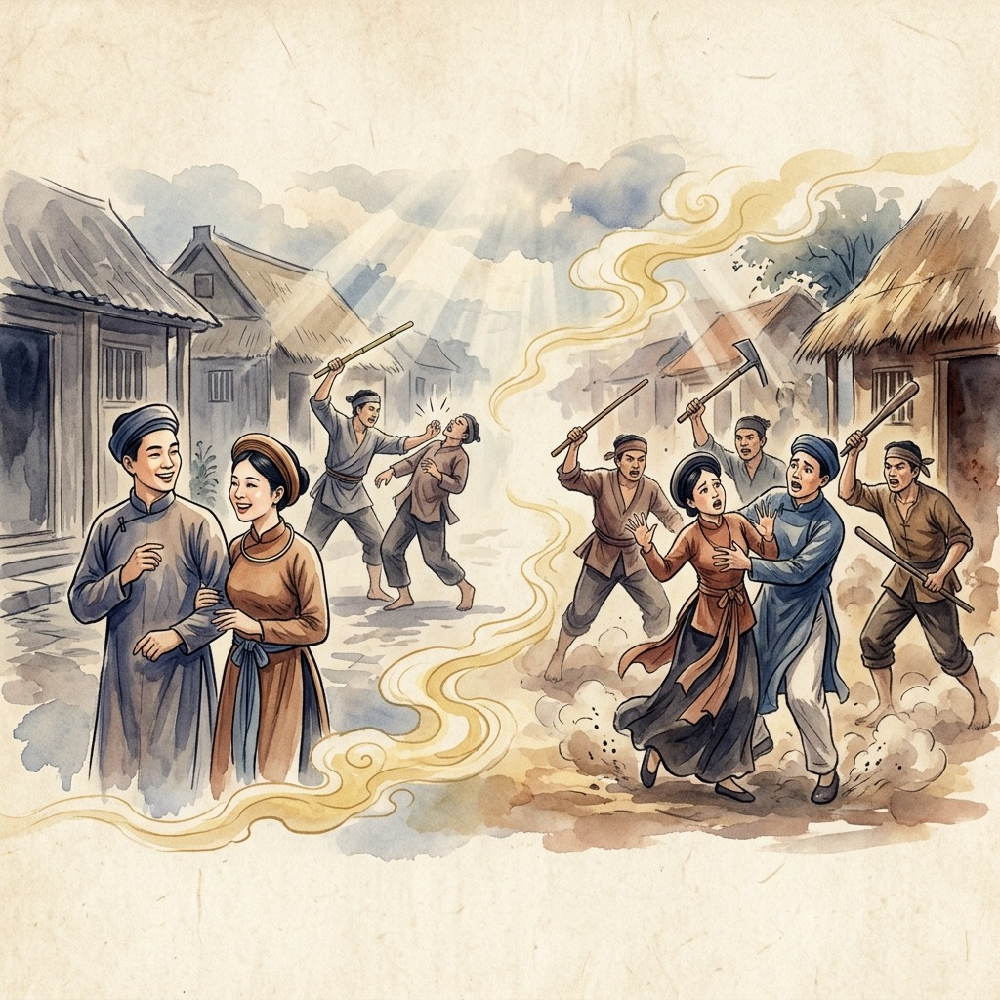
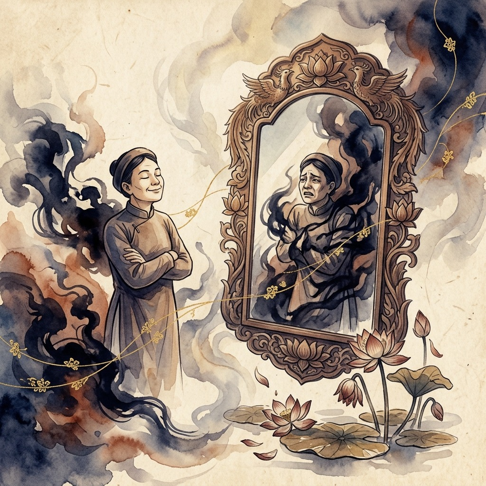
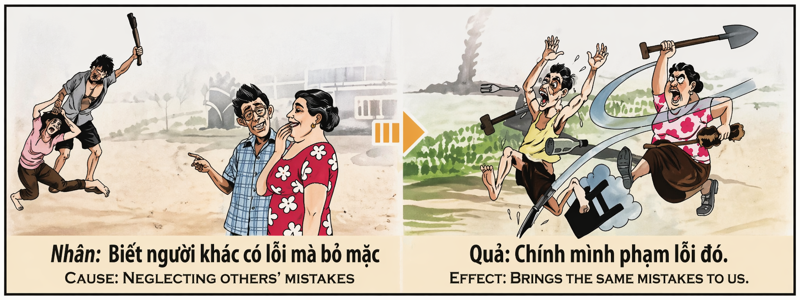

El Espejo de la Tolerancia Ciega The Mirror of Blind Tolerance Lo Specchio della Tolleranza Cieca 盲目纵容之镜 مرآة التسامح الأعمى Зеркало слепой терпимости Der Spiegel der blinden Toleranz Le Miroir de la Tolérance Aveugle 盲目な寛容の鏡 O Espelho da Tolerância Cega Tấm Gương Của Sự Dung Túng Mù Quáng
"Quien tolera el mal ajeno en silencio, siembra en su propia tierra la cosecha amarga que un día deberá recoger." "He who silently tolerates the wrongs of others plants in his own soil the bitter harvest he must one day reap." "Chi tollera il male altrui in silenzio, semina nella propria terra il raccolto amaro che un giorno dovrà mietere." “默默纵容他人之恶者，终将在自己的田地里播下苦果的种子。” "من يتسامح مع أخطاء الآخرين في صمت، يزرع في أرضه الحصاد المر الذي سيحصده يومًا ما." «Кто молча терпит чужое зло, тот сеет на своей земле горький урожай, который однажды придется собирать». „Wer das Unrecht anderer schweigend duldet, sät auf eigenem Boden die bittere Ernte, die er eines Tages einfahren muss.“ « Celui qui tolère en silence le mal d'autrui sème sur sa propre terre la récolte amère qu'il devra un jour moissonner. » 「他者の悪を黙って容認する者は、いつか自ら刈り取らねばならぬ苦い収穫を、自分の大地に蒔いているのだ。」 "Quem tolera em silêncio o mal alheio, semeia na sua própria terra a colheita amarga que um dia terá de ceifar." "Kẻ im lặng dung túng cái sai của người khác, chính là gieo trên mảnh đất của mình vụ mùa cay đắng mà rồi sẽ phải gặt hái."
El karma tiene un mecanismo poco comprendido pero devastadoramente exacto: quien observa el error ajeno con indiferencia, quien sabe que otro está cometiendo una falta y decide mirar hacia otro lado, está firmando un contrato invisible con el universo para experimentar ese mismo error en su propia carne. No se trata de un castigo arbitrario, sino de una ley de aprendizaje profundo; si el conocimiento del mal no te mueve a actuar, el universo te obligará a comprenderlo desde dentro, convirtiéndote en protagonista de aquello que despreciaste corregir.
La tolerancia ciega ante las faltas de otros no es compasión ni sabiduría: es cobardía espiritual disfrazada de paz. Cuando vemos a alguien dañar y elegimos el silencio cómodo, estamos alimentando la raíz del mal con nuestro consentimiento tácito. El universo interpreta esta pasividad como una aceptación de esa energía, y por resonancia kármica, esa misma vibración se instala en nuestra vida hasta que la experimentamos y la comprendemos con todo nuestro ser.
El mecanismo es claro: la corrección fraterna no es entrometerse, es un acto de amor radical. Quien advierte al hermano que se equivoca le ahorra sufrimiento y, al mismo tiempo, se protege a sí mismo de heredar ese karma por omisión. La valentía de señalar el error con respeto y amor es la vacuna espiritual contra la repetición cíclica del mal. Ignorar los errores de otros no nos libra de ellos; nos encadena a revivirlos.
Karma has a mechanism that is little understood yet devastatingly precise: whoever observes another's error with indifference, whoever knows that someone is committing a wrong and decides to look the other way, is signing an invisible contract with the universe to experience that very same error in their own flesh. This is not an arbitrary punishment, but a law of deep learning; if knowledge of evil does not move you to act, the universe will force you to understand it from within, making you the protagonist of what you disdained to correct.
Blind tolerance of others' faults is not compassion or wisdom: it is spiritual cowardice disguised as peace. When we see someone causing harm and choose comfortable silence, we are feeding the root of evil with our tacit consent. The universe interprets this passivity as acceptance of that energy, and through karmic resonance, that same vibration takes hold in our life until we experience and understand it with our entire being.
The mechanism is clear: fraternal correction is not meddling—it is an act of radical love. Whoever warns a brother of their mistake spares them suffering and, at the same time, protects themselves from inheriting that karma through omission. The courage to point out error with respect and love is the spiritual vaccine against the cyclical repetition of evil. Ignoring others' mistakes does not free us from them; it chains us to reliving them.
Il karma possiede un meccanismo poco compreso ma devastantemente preciso: chi osserva l'errore altrui con indifferenza, chi sa che qualcuno sta commettendo una colpa e decide guardare dall'altra parte, sta firmando un contratto invisibile con l'universo per sperimentare quello stesso errore sulla propria pelle. Non si tratta di una punizione arbitraria, ma di una legge di apprendimento profondo; se la conoscenza del male non ti spinge ad agire, l'universo ti obbligherà a comprenderlo dall'interno, facendoti protagonista di ciò che hai disdegnato correggere.
La tolleranza cieca verso le colpe altrui non è compassione né saggezza: è codardia spirituale travestita da pace. Quando vediamo qualcuno fare del male e scegliamo il comodo silenzio, stiamo alimentando la radice del male con il nostro tacito consenso. L'universo interpreta questa passività come accettazione di quell'energia, e per risonanza karmica, quella stessa vibrazione si insedia nella nostra vita finché non la sperimentiamo e la comprendiamo con tutto il nostro essere.
Il meccanismo è chiaro: la correzione fraterna non è invadenza, è un atto d'amore radicale. Chi avverte il fratello del suo errore gli risparmia sofferenza e, allo stesso tempo, protegge se stesso dall'ereditare quel karma per omissione. Il coraggio di indicare l'errore con rispetto e amore è il vaccino spirituale contro la ripetizione ciclica del male. Ignorare gli errori altrui non ci libera da essi; ci incatena a riviverli.
业力有一个鲜为人知但极其精确的机制：凡是对他人的过错漠然视之，明知有人犯错却选择视而不见的人，都在与宇宙签订一份无形的契约——亲身经历同样的过错。这不是随意的惩罚，而是一种深层的学习法则；如果知道邪恶却不促使你行动，宇宙将迫使你从内部理解它，让你成为你不屑纠正之事的主角。
对他人过错的盲目容忍不是慈悲也不是智慧：它是伪装成和平的精神怯懦。当我们看到有人造成伤害却选择安逸的沉默时，我们正在用默许喂养邪恶的根源。宇宙将这种被动解读为对那种能量的接受，通过因果共振，同样的振动会在我们的生活中扎根，直到我们全身心地经历和理解它。
机制是明确的：兄弟般的纠正不是多管闲事，而是一种根本性的爱的行为。警告兄弟其错误的人为他免去了痛苦，同时也保护了自己免于因疏忽而继承那个业力。以尊重和爱指出错误的勇气是抵御恶性循环重复的精神疫苗。忽视他人的错误并不能使我们摆脱它们；而是将我们锁链在重新经历它们的命运中。
للكارما آلية قلما يفهمها الناس لكنها دقيقة بشكل مدمر: من يراقب خطأ الآخرين بلا مبالاة، من يعلم أن شخصاً ما يرتكب ذنباً ويقرر أن ينظر بعيداً، يوقع عقداً غير مرئي مع الكون ليختبر ذلك الخطأ نفسه في جسده. هذا ليس عقاباً عشوائياً، بل هو قانون تعلم عميق؛ إذا لم تدفعك معرفة الشر إلى التحرك، فسيجبرك الكون على فهمه من الداخل، ليجعلك بطل ما ازدريت تصحيحه.
التسامح الأعمى مع أخطاء الآخرين ليس رحمة ولا حكمة: إنه جبن روحي متنكر في ثوب السلام. عندما نرى شخصاً يلحق الأذى ونختار الصمت المريح، فإننا نغذي جذر الشر بموافقتنا الضمنية. يفسر الكون هذه السلبية على أنها قبول لتلك الطاقة، وبالرنين الكارمي، تستقر تلك الذبذبة نفسها في حياتنا حتى نختبرها ونفهمها بكل كياننا.
الآلية واضحة: التصحيح الأخوي ليس تدخلاً، بل هو فعل حب جذري. من ينبه أخاه إلى خطئه يوفر عليه المعاناة، وفي الوقت نفسه يحمي نفسه من وراثة تلك الكارما بالإغفال. الشجاعة في الإشارة إلى الخطأ بالاحترام والحب هي اللقاح الروحي ضد التكرار الدوري للشر. تجاهل أخطاء الآخرين لا يحررنا منها؛ بل يقيدنا بإعادة عيشها.
Карма обладает механизмом, который мало кто понимает, но который действует с разрушительной точностью: тот, кто наблюдает за чужой ошибкой с безразличием, кто знает, что другой совершает проступок, и решает отвернуться, подписывает невидимый контракт со Вселенной на переживание той же самой ошибки в собственной жизни. Это не произвольное наказание, а закон глубокого обучения: если знание зла не побуждает тебя действовать, Вселенная заставит тебя понять его изнутри, сделав тебя главным героем того, что ты пренебрёг исправить.
Слепая терпимость к чужим ошибкам — это не сострадание и не мудрость: это духовная трусость, замаскированная под мир. Когда мы видим, как кто-то причиняет вред, и выбираем удобное молчание, мы питаем корень зла своим молчаливым согласием. Вселенная интерпретирует эту пассивность как принятие этой энергии, и через кармический резонанс та же вибрация поселяется в нашей жизни, пока мы не переживём и не осознаем её всем своим существом.
Механизм ясен: братское исправление — это не вмешательство, а акт радикальной любви. Тот, кто предупреждает брата об ошибке, избавляет его от страданий и одновременно защищает себя от наследования этой кармы по бездействию. Мужество указать на ошибку с уважением и любовью — это духовная вакцина против циклического повторения зла. Игнорирование чужих ошибок не освобождает нас от них — оно приковывает нас к их повторному переживанию.
Karma besitzt einen Mechanismus, der wenig verstanden, aber verheerend präzise ist: Wer den Fehler eines anderen mit Gleichgültigkeit beobachtet, wer weiß, dass jemand einen Fehltritt begeht, und sich entscheidet, wegzuschauen, unterschreibt einen unsichtbaren Vertrag mit dem Universum, denselben Fehler am eigenen Leib zu erfahren. Dies ist keine willkürliche Bestrafung, sondern ein Gesetz des tiefen Lernens; wenn dich das Wissen um das Böse nicht zum Handeln bewegt, wird das Universum dich zwingen, es von innen zu verstehen, indem es dich zum Protagonisten dessen macht, was du zu korrigieren verschmäht hast.
Blinde Toleranz gegenüber den Fehlern anderer ist weder Mitgefühl noch Weisheit: Es ist geistige Feigheit, verkleidet als Frieden. Wenn wir sehen, wie jemand Schaden anrichtet, und das bequeme Schweigen wählen, nähren wir die Wurzel des Bösen mit unserer stillschweigenden Zustimmung. Das Universum interpretiert diese Passivität als Akzeptanz dieser Energie, und durch karmische Resonanz nistet sich dieselbe Schwingung in unserem Leben ein, bis wir sie mit unserem ganzen Sein erfahren und verstehen.
Der Mechanismus ist klar: Brüderliche Korrektur ist keine Einmischung — es ist ein Akt radikaler Liebe. Wer den Bruder vor seinem Fehler warnt, erspart ihm Leid und schützt gleichzeitig sich selbst davor, dieses Karma durch Unterlassung zu erben. Der Mut, auf Fehler mit Respekt und Liebe hinzuweisen, ist die geistige Impfung gegen die zyklische Wiederholung des Bösen. Die Fehler anderer zu ignorieren befreit uns nicht von ihnen; es kettet uns daran, sie erneut zu durchleben.
Le karma possède un mécanisme peu compris mais d'une précision dévastatrice : quiconque observe l'erreur d'autrui avec indifférence, quiconque sait que quelqu'un commet une faute et décide de détourner le regard, signe un contrat invisible avec l'univers pour vivre cette même erreur dans sa propre chair. Il ne s'agit pas d'une punition arbitraire, mais d'une loi d'apprentissage profond ; si la connaissance du mal ne te pousse pas à agir, l'univers te forcera à le comprendre de l'intérieur, faisant de toi le protagoniste de ce que tu as dédaigné de corriger.
La tolérance aveugle envers les fautes d'autrui n'est ni compassion ni sagesse : c'est de la lâcheté spirituelle déguisée en paix. Lorsque nous voyons quelqu'un causer du tort et choisissons le silence confortable, nous alimentons la racine du mal par notre consentement tacite. L'univers interprète cette passivité comme une acceptation de cette énergie, et par résonance karmique, cette même vibration s'installe dans notre vie jusqu'à ce que nous la vivions et la comprenions de tout notre être.
Le mécanisme est clair : la correction fraternelle n'est pas de l'ingérence — c'est un acte d'amour radical. Celui qui avertit son frère de son erreur lui épargne de la souffrance et, en même temps, se protège lui-même d'hériter de ce karma par omission. Le courage de signaler l'erreur avec respect et amour est le vaccin spirituel contre la répétition cyclique du mal. Ignorer les erreurs d'autrui ne nous en libère pas ; cela nous enchaîne à les revivre.
カルマには、ほとんど理解されていないが壊滅的に正確なメカニズムがあります。他者の過ちを無関心に眺める者、誰かが過ちを犯していると知りながら目をそらすことを選ぶ者は、まさにその同じ過ちを自らの身で体験するという見えない契約を宇宙と交わしているのです。これは恣意的な罰ではなく、深い学びの法則です。悪の知識があなたを行動に駆り立てないなら、宇宙はあなたに内側からそれを理解させ、あなたが正すことを軽んじたものの主人公にするでしょう。
他者の過ちに対する盲目的な寛容は、慈悲でも知恵でもありません。それは平和を装った精神的臆病です。誰かが害を与えているのを見て、心地よい沈黙を選ぶとき、私たちは暗黙の同意によって悪の根を養っているのです。宇宙はこの受動性をそのエネルギーの受容と解釈し、カルマの共鳴を通じて、その同じ振動が私たちの人生に根を下ろし、全存在をもって体験し理解するまで続きます。
メカニズムは明確です。兄弟的な矯正はおせっかいではなく、根源的な愛の行為です。過ちを犯している兄弟に警告する者は、その人の苦しみを免れさせると同時に、怠慢によるカルマの継承から自分自身を守ります。敬意と愛をもって過ちを指摘する勇気は、悪の循環的な繰り返しに対する精神的ワクチンです。他者の過ちを無視しても、私たちはそこから解放されません。それは私たちをその過ちを追体験する鎖につなぐのです。
O karma possui um mecanismo pouco compreendido mas devastadoramente preciso: quem observa o erro alheio com indiferença, quem sabe que alguém está a cometer uma falta e decide olhar para o outro lado, está a assinar um contrato invisível com o universo para experimentar esse mesmo erro na própria carne. Não se trata de um castigo arbitrário, mas de uma lei de aprendizagem profunda; se o conhecimento do mal não te move a agir, o universo obrigar-te-á a compreendê-lo por dentro, tornando-te protagonista daquilo que desprezaste corrigir.
A tolerância cega perante as faltas alheias não é compaixão nem sabedoria: é cobardia espiritual disfarçada de paz. Quando vemos alguém a causar dano e escolhemos o silêncio cómodo, estamos a alimentar a raiz do mal com o nosso consentimento tácito. O universo interpreta esta passividade como aceitação dessa energia e, por ressonância kármica, essa mesma vibração instala-se na nossa vida até que a experimentemos e a compreendamos com todo o nosso ser.
O mecanismo é claro: a correção fraterna não é intromissão — é um ato de amor radical. Quem adverte o irmão do seu erro poupa-lhe sofrimento e, ao mesmo tempo, protege-se a si próprio de herdar esse karma por omissão. A coragem de apontar o erro com respeito e amor é a vacina espiritual contra a repetição cíclica do mal. Ignorar os erros dos outros não nos liberta deles; acorrenta-nos a revivê-los.
Nghiệp lực có một cơ chế ít được hiểu nhưng chính xác đến tàn khốc: ai quan sát lỗi lầm của người khác với sự thờ ơ, ai biết rằng người khác đang phạm sai lầm mà quyết định quay mặt đi, là đang ký một hợp đồng vô hình với vũ trụ để chính mình trải nghiệm cùng lỗi lầm đó. Đây không phải là một hình phạt tùy tiện, mà là một quy luật học hỏi sâu sắc; nếu sự hiểu biết về cái ác không thúc đẩy bạn hành động, vũ trụ sẽ buộc bạn phải thấu hiểu nó từ bên trong, biến bạn thành nhân vật chính của điều mà bạn đã khinh thường không chịu sửa chữa.
Sự dung túng mù quáng đối với lỗi lầm của người khác không phải là lòng từ bi hay sự khôn ngoan: đó là sự hèn nhát tâm linh ngụy trang thành sự bình yên. Khi chúng ta thấy ai đó gây hại và chọn sự im lặng thoải mái, chúng ta đang nuôi dưỡng gốc rễ của cái ác bằng sự đồng ý ngầm. Vũ trụ diễn giải sự thụ động này như sự chấp nhận năng lượng đó, và qua cộng hưởng nghiệp lực, cùng một rung động ấy sẽ bám rễ trong cuộc đời chúng ta cho đến khi chúng ta trải nghiệm và thấu hiểu nó bằng toàn bộ con người mình.
Cơ chế rất rõ ràng: sự sửa sai huynh đệ không phải là xen vào chuyện người — đó là một hành động yêu thương triệt để. Ai cảnh báo người anh em về lỗi lầm của họ sẽ giúp họ tránh được khổ đau, và đồng thời bảo vệ chính mình khỏi việc thừa kế nghiệp đó do thiếu sót. Lòng dũng cảm chỉ ra lỗi lầm với sự tôn trọng và yêu thương chính là liều vắc-xin tâm linh chống lại sự lặp lại tuần hoàn của cái ác. Phớt lờ lỗi lầm của người khác không giải thoát chúng ta khỏi chúng; nó xích chúng ta vào việc phải sống lại chúng.
El Pueblo de los Ojos Cerrados
The People of Closed Eyes
Il popolo degli occhi chiusi
闭着眼睛的人们
أهل العيون المغلقة
Люди с закрытыми глазами
Das Volk der geschlossenen Augen
Le peuple aux yeux fermés
目を閉じた人々
O povo de olhos fechados
Những người nhắm mắt
En una aldea rodeada de colinas verdes vivía una comunidad que se preciaba de su tranquilidad. Todos conocían a Dang, un hombre violento que golpeaba a su esposa y humillaba a sus hijos cada noche. Los vecinos, Tuan y Linh, escuchaban los gritos a través de las paredes de bambú, pero se reían nerviosamente, murmurando: «No es asunto nuestro. Mientras no nos toque a nosotros, ¿para qué meternos en problemas?». Y así, noche tras noche, cerraban sus ventanas y apagaban las velas.
Otros aldeanos también sabían del sufrimiento de aquella familia. El anciano del pueblo decía: «Cada cual carga con su destino». La vendedora del mercado susurraba: «Si ella quisiera, se iría». Nadie levantó una mano para ayudar. Nadie pronunció una palabra de corrección hacia Dang. La violencia creció como una enredadera venenosa, alimentada por el silencio cómplice de todo un pueblo que eligió la comodidad sobre la justicia.
El tiempo giró la rueda del karma con precisión implacable. Tuan, el vecino que más se reía de la situación, comenzó a perder el control de su propio temperamento. Sin entender por qué, empezó a gritar a su esposa por cualquier tontería, a levantar la mano contra sus hijos, a sentir una ira inexplicable que le hervía en las venas. Linh, su mujer, que antes se burlaba junto a él, ahora temblaba de miedo en su propia casa. El error que habían tolerado con risas ahora habitaba en sus propios huesos.
Solo cuando Tuan se vio reflejado en el espejo roto del karma —convertido exactamente en aquello que había ignorado— comprendió la terrible verdad: tolerar el mal ajeno no te protege; te contagia. Las lágrimas que no quisiste secar se convierten en las tuyas. Los golpes que no quisiste detener caen sobre tu propia espalda. Y la única forma de romper la cadena es tener el coraje de hablar, de corregir con amor, de no permitir jamás que el sufrimiento de otro sea invisible ante tus ojos.
In a village surrounded by green hills lived a community that prided itself on its tranquility. Everyone knew Dang, a violent man who beat his wife and humiliated his children every night. The neighbors, Tuan and Linh, heard the screams through the bamboo walls, but they laughed nervously, murmuring: “It's none of our business. As long as it's not our turn, why get into trouble? And so, night after night, they closed their windows and blew out the candles.
Other villagers also knew of that family's suffering. The old man of the town said: "Everyone bears his destiny." The market seller whispered: "If she wanted to, she would leave." No one raised a hand to help. No one uttered a word of correction toward Dang. The violence grew like a poisonous vine, fueled by the complicit silence of an entire people who chose comfort over justice.
Time turned the wheel of karma with relentless precision. Tuan, the neighbor who laughed the most at the situation, began to lose control of his own temper. Without understanding why, he began to yell at his wife for any nonsense, to raise his hand against his children, to feel an inexplicable anger boiling in his veins. Linh, his wife, who had previously mocked him next to him, was now trembling with fear in her own home. The mistake they had tolerated with laughter now lived in their very bones.
Only when Tuan saw himself reflected in the broken mirror of karma—turned into exactly what he had ignored—did he understand the terrible truth: tolerating other people's evil does not protect you; It infects you. The tears you didn't want to dry become yours. The blows that you did not want to stop fall on your own back. And the only way to break the chain is to have the courage to speak, to correct with love, to never allow another's suffering to be invisible before your eyes.
In un villaggio circondato da verdi colline viveva una comunità che si vantava della propria tranquillità. Tutti conoscevano Dang, un uomo violento che ogni notte picchiava la moglie e umiliava i suoi figli. I vicini, Tuan e Linh, sentivano le urla attraverso le pareti di bambù, ma ridevano nervosamente, mormorando: "Non sono affari nostri. Finché non è il nostro turno, perché metterci nei guai? E così, notte dopo notte, hanno chiuso le finestre e hanno spento le candele. "
Anche altri abitanti del villaggio sapevano della sofferenza di quella famiglia. Il vecchio del paese diceva: "Ognuno porta il suo destino". La venditrice del mercato sussurrò: "Se volesse, se ne andrebbe". Nessuno ha alzato una mano per aiutare. Nessuno ha pronunciato una parola di correzione nei confronti di Dang. La violenza è cresciuta come una vite velenosa, alimentata dal silenzio complice di un intero popolo che ha preferito la comodità alla giustizia.
Il tempo girava la ruota del karma con implacabile precisione. Tuan, il vicino che rideva di più della situazione, iniziò a perdere il controllo della propria calma. Senza capire il motivo, cominciò a sgridare la moglie per qualsiasi sciocchezza, ad alzare la mano contro i figli, a sentire una rabbia inspiegabile ribollirgli nelle vene. Linh, sua moglie, che in precedenza lo aveva deriso accanto a lui, ora tremava di paura nella sua stessa casa. L'errore che avevano tollerato ridendo ora viveva nelle loro stesse ossa.
Solo quando Tuan vide se stesso riflesso nello specchio rotto del karma – trasformato esattamente in ciò che aveva ignorato – capì la terribile verità: tollerare il male degli altri non ti protegge; Ti contagia. Le lacrime che non volevi asciugare diventano tue. I colpi che non volevi fermare cadono sulla tua schiena. E l'unico modo per spezzare la catena è avere il coraggio di parlare, di correggere con amore, di non permettere mai che la sofferenza altrui sia invisibile davanti ai propri occhi.
在一个被青山环绕的村庄里，住着一个以其宁静而自豪的社区。每个人都认识Dang，他是一个暴力男子，每天晚上殴打妻子并羞辱孩子。邻居Tuan和Linh透过竹墙听到了尖叫声，但他们紧张地笑着，嘀咕道：“这不关我们的事。只要轮不到我们，为什么要惹麻烦呢？于是，他们夜复一夜地关上窗户，吹灭蜡烛。
其他村民也知道这家人的遭遇。镇上的老人说：“每个人都有自己的命运。”摊贩小声说道：“如果她愿意的话，她就走。”没有人举手帮忙。没有人对党说一句纠正的话。暴力行为像有毒的藤蔓一样蔓延，而选择舒适而不是正义的全体人民的同谋沉默助长了暴力。
时间以无情的精确度转动着业力之轮。邻居Tuan对这种情况笑得最开心，他的脾气也开始失控。不明白为什么，他开始对妻子大喊大叫，对孩子举起手来，感到一股莫名的愤怒在血管里沸腾。之前在旁边嘲笑他的妻子林，现在在自己家里吓得浑身发抖。他们曾经笑着容忍的错误现在已经深入骨髓。
只有当Tuan看到自己在破碎的业力镜子中反映出来时——变成了他所忽视的样子——他才明白了一个可怕的事实：容忍别人的邪恶并不能保护你;它感染了你。你不愿流干的泪水变成了你的。你不想停止的打击落在了你自己的背上。打破这个锁链的唯一方法就是有勇气说话，用爱去纠正，永远不要让别人的痛苦在你眼前看不见。
في قرية محاطة بالتلال الخضراء، عاش مجتمع يفتخر بهدوئه. كان الجميع يعرفون دانغ، الرجل العنيف الذي كان يضرب زوجته ويهين أطفاله كل ليلة. سمع الجيران، توان ولينه، الصراخ عبر جدران الخيزران، لكنهم ضحكوا بعصبية، وتذمروا: "هذا ليس من شأننا. طالما أنه ليس دورنا، فلماذا نتورط في المشاكل؟ وهكذا، ليلة بعد ليلة، أغلقوا نوافذهم وأطفأوا الشموع. لقد ضحكوا وضحكوا بعصبية".
كما علم قرويون آخرون بمعاناة تلك العائلة. وقال رجل البلدة العجوز: "كل شخص يحمل قدره". وهمس بائع السوق: لو أرادت لرحلت. ولم يرفع أحد يده للمساعدة. لم ينطق أحد بكلمة تصحيح تجاه دانغ. ونمو العنف مثل كرمة سامة، يغذيها الصمت المتواطئ لشعب بأكمله الذي اختار الراحة على العدالة.
لقد أدار الزمن عجلة الكارما بدقة لا هوادة فيها. بدأ توان، الجار الذي ضحك أكثر من غيره على الوضع، يفقد السيطرة على أعصابه. دون أن يفهم السبب، بدأ بالصراخ على زوجته بسبب أي هراء، ورفع يده على أطفاله، ليشعر بغضب لا يمكن تفسيره يغلي في عروقه. لينه، زوجته، التي سخرت منه في السابق بجانبه، كانت ترتجف الآن من الخوف في منزلها. الخطأ الذي تحملوه بالضحك يعيش الآن في عظامهم.
فقط عندما رأى توان نفسه منعكسًا في مرآة الكارما المكسورة - وقد تحول إلى ما تجاهله بالضبط - فهم الحقيقة الرهيبة: التسامح مع شر الآخرين لا يحميك؛ إنه يصيبك. الدموع التي لا تريد أن تجفف تصبح لك. الضربات التي لم ترغب في إيقافها تقع على ظهرك. والطريقة الوحيدة لكسر السلسلة هي أن تكون لديك الشجاعة للتحدث، والتصحيح بالحب، وعدم السماح أبدًا بأن تكون معاناة شخص آخر غير مرئية أمام عينيك.
В деревне, окруженной зелеными холмами, жила община, которая гордилась своим спокойствием. Все знали Данга, жестокого человека, который каждую ночь избивал свою жену и унижал своих детей. Соседи, Туан и Линь, слышали крики сквозь бамбуковые стены, но нервно смеялись, бормоча: "Это не наше дело. Пока не наша очередь, зачем влезать в неприятности? И так ночь за ночью они закрывали окна и задували свечи".
Другие жители деревни также знали о страданиях этой семьи. Старик города сказал: «Каждый несет свою судьбу». Продавец на рынке прошептал: «Если бы она захотела, она бы ушла». Никто не поднял руку, чтобы помочь. Никто не произнес ни слова поправки в адрес Данга. Насилие росло, как ядовитая лоза, подпитываемое молчаливым молчанием целого народа, предпочитавшего комфорт справедливости.
Время вращало колесо кармы с неустанной точностью. Туан, сосед, который больше всех смеялся над этой ситуацией, начал терять контроль над собой. Сам не понимая почему, он стал кричать на жену по всякой ерунде, поднимать руку на детей, чувствовать, как в его жилах кипит необъяснимая злоба. Линь, его жена, которая раньше издевалась над ним рядом с ним, теперь дрожала от страха в собственном доме. Ошибка, которую они терпели со смехом, теперь жила в их костях.
Только когда Туан увидел свое отражение в разбитом зеркале кармы — превратившееся именно в то, что он игнорировал, — он понял ужасную истину: терпимость к чужому злу не защитит тебя; Оно заражает вас. Слёзы, которые ты не хотел вытирать, станут твоими. Удары, которые ты не хотел прекращать, приходятся на твою собственную спину. И единственный способ разорвать эту цепь – это иметь смелость говорить, исправлять с любовью, никогда не позволять чужому страданию быть невидимым перед твоими глазами.
In einem von grünen Hügeln umgebenen Dorf lebte eine Gemeinschaft, die stolz auf ihre Ruhe war. Jeder kannte Dang, einen gewalttätigen Mann, der jede Nacht seine Frau schlug und seine Kinder demütigte. Die Nachbarn Tuan und Linh hörten die Schreie durch die Bambuswände, aber sie lachten nervös und murmelten: „Das geht uns nichts an. Solange wir nicht an der Reihe sind, warum sollten wir uns dann in Schwierigkeiten bringen? Und so schlossen sie Nacht für Nacht ihre Fenster und bliesen die Kerzen aus.“
Auch andere Dorfbewohner wussten vom Leid dieser Familie. Der alte Mann der Stadt sagte: „Jeder trägt sein Schicksal.“ Die Marktverkäuferin flüsterte: „Wenn sie wollte, würde sie gehen.“ Niemand hob die Hand, um zu helfen. Niemand sagte gegenüber Dang ein Wort der Zurechtweisung. Die Gewalt wuchs wie eine giftige Rebe, angeheizt durch das mitschuldige Schweigen eines ganzen Volkes, das Trost der Gerechtigkeit vorzog.
Die Zeit drehte das Rad des Karma mit unerbittlicher Präzision. Tuan, der Nachbar, der über die Situation am meisten lachte, begann, die Kontrolle über sein eigenes Temperament zu verlieren. Ohne zu verstehen, warum, fing er an, seine Frau wegen irgendwelchen Unsinns anzuschreien, er hob die Hand gegen seine Kinder und spürte, wie eine unerklärliche Wut in seinen Adern brodelte. Linh, seine Frau, die ihn zuvor neben ihm verspottet hatte, zitterte nun vor Angst in ihrem eigenen Zuhause. Der Fehler, den sie mit Lachen ertragen hatten, saß ihnen nun in den Knochen.
Erst als Tuan sah, wie er sich im zerbrochenen Spiegel des Karma widerspiegelte – genau in das verwandelte, was er ignoriert hatte –, verstand er die schreckliche Wahrheit: Das Böse anderer Menschen zu tolerieren schützt nicht; Es infiziert dich. Die Tränen, die du nicht trocknen wolltest, werden deine. Die Schläge, die du nicht aufhalten wolltest, landen auf deinem eigenen Rücken. Und der einzige Weg, die Kette zu durchbrechen, besteht darin, den Mut zu haben, zu sprechen, mit Liebe zu korrigieren und niemals zuzulassen, dass das Leiden eines anderen vor deinen Augen unsichtbar bleibt.
Dans un village entouré de collines verdoyantes vivait une communauté fière de sa tranquillité. Tout le monde connaissait Dang, un homme violent qui battait sa femme et humiliait ses enfants chaque nuit. Les voisins, Tuan et Linh, entendirent les cris à travers les murs de bambou, mais ils rirent nerveusement en murmurant : "Ce ne sont pas nos affaires. Tant que ce n'est pas notre tour, pourquoi avoir des ennuis ? Et ainsi, nuit après nuit, ils fermèrent leurs fenêtres et soufflèrent les bougies.
D'autres villageois connaissaient également les souffrances de cette famille. Le vieil homme de la ville disait : « Chacun porte son destin ». La vendeuse du marché murmura : « Si elle le voulait, elle partirait. » Personne n’a levé la main pour l’aider. Personne n’a prononcé un mot de correction envers Dang. La violence s’est développée comme une vigne venimeuse, alimentée par le silence complice de tout un peuple qui a choisi le confort plutôt que la justice.
Le temps faisait tourner la roue du karma avec une précision implacable. Tuan, le voisin qui riait le plus de la situation, a commencé à perdre le contrôle de son caractère. Sans comprendre pourquoi, il s'est mis à crier après sa femme pour toute bêtise, à lever la main contre ses enfants, à sentir une colère inexplicable bouillonner dans ses veines. Linh, sa femme, qui s'était auparavant moquée de lui à côté de lui, tremblait maintenant de peur dans sa propre maison. L’erreur qu’ils avaient tolérée en riant vivait désormais dans leurs os.
Ce n'est que lorsque Tuan s'est vu reflété dans le miroir brisé du karma – transformé exactement en ce qu'il avait ignoré – qu'il a compris la terrible vérité : tolérer le mal des autres ne vous protège pas ; Cela vous infecte. Les larmes que tu ne voulais pas sécher deviennent les tiennes. Les coups que vous ne vouliez pas arrêter retombent sur votre propre dos. Et la seule façon de briser la chaîne est d'avoir le courage de parler, de corriger avec amour, de ne jamais permettre que la souffrance d'autrui soit invisible sous vos yeux.
緑の丘に囲まれた村には、静けさを誇るコミュニティが住んでいました。ダンは毎晩妻を殴り、子供たちを辱める暴力的な男であることは誰もが知っていました。近所のトゥアンさんとリンさんは竹の壁越しに叫び声を聞いたが、神経質に笑いながらつぶやいた、「私たちには関係ない。私たちの番でもないのに、なぜトラブルに巻き込まれるの？それで、彼らは夜な夜な窓を閉め、ろうそくの火を吹き消しました。」
他の村人もその家族の苦しみを知っていました。町の老人は、「誰もが自分の運命を背負っている」と言いました。市場の売り手はこうささやきました、「もし彼女が望むなら、彼女は立ち去るだろう。」誰も助けようと手を挙げなかった。誰もダンに対して一言も訂正の言葉を発しなかった。暴力は毒蔓のように増大し、正義よりも慰めを選んだ国民全体の共謀的な沈黙によって煽られた。
時間はカルマの車輪を容赦ない精度で回転させました。この状況を見て一番笑った隣人のトゥアンさんは、自分の怒りをコントロールできなくなり始めた。理由も分からないまま、彼は妻にくだらないことで怒鳴ったり、子供たちに手を挙げたりするようになり、説明のつかない怒りが静脈に沸騰するのを感じました。以前、彼の隣で彼を嘲笑していた妻のリンは、今では自宅で恐怖に震えていた。彼らが笑いながら許容していた失敗は、今では彼らの骨の髄まで生き続けている。
トゥアンは、壊れたカルマの鏡に自分自身が映り、まさに彼が無視してきたものに変わってしまったのを見て初めて、恐ろしい真実を理解した。他人の悪を容認することは自分を守るわけではない。それはあなたに感染します。乾かしたくなかった涙があなたのものになります。止めたくなかった打撃は自分の背中に落ちる。そして、その連鎖を断ち切る唯一の方法は、勇気を持って話し、愛を持って正し、他人の苦しみを決して目の前で見られないようにすることです。
Numa aldeia rodeada de colinas verdejantes vivia uma comunidade que se orgulhava da sua tranquilidade. Todos conheciam Dang, um homem violento que batia na esposa e humilhava os filhos todas as noites. Os vizinhos, Tuan e Linh, ouviram os gritos através das paredes de bambu, mas riram nervosamente, murmurando: "Não é da nossa conta. Enquanto não for a nossa vez, por que se meter em encrencas? E assim, noite após noite, eles fecharam as janelas e apagaram as velas.
Outros aldeões também sabiam do sofrimento daquela família. O velho da cidade disse: “Cada um carrega o seu destino”. A vendedora do mercado sussurrou: “Se ela quisesse, ela iria embora”. Ninguém levantou a mão para ajudar. Ninguém pronunciou uma palavra de correção para Dang. A violência cresceu como uma videira venenosa, alimentada pelo silêncio cúmplice de todo um povo que preferiu o conforto à justiça.
O tempo girou a roda do carma com precisão implacável. Tuan, o vizinho que mais riu da situação, começou a perder o controle do próprio temperamento. Sem entender por que, ele começou a gritar com a esposa por qualquer bobagem, a levantar a mão contra os filhos, a sentir uma raiva inexplicável fervendo em suas veias. Linh, sua esposa, que antes havia zombado dele ao lado dele, agora tremia de medo em sua própria casa. O erro que haviam tolerado com risadas agora vivia em seus ossos.
Somente quando Tuan se viu refletido no espelho quebrado do carma — transformado exatamente naquilo que ele havia ignorado — é que ele compreendeu a terrível verdade: tolerar a maldade dos outros não protege você; Isso infecta você. As lágrimas que você não queria secar passam a ser suas. Os golpes que você não queria impedir caem sobre suas próprias costas. E a única maneira de quebrar a corrente é ter a coragem de falar, de corrigir com amor, de nunca permitir que o sofrimento do outro fique invisível diante dos seus olhos.
Trong một ngôi làng được bao quanh bởi những ngọn đồi xanh, có một cộng đồng tự hào về sự yên bình của mình. Mọi người đều biết Đặng, một người đàn ông bạo lực, đêm nào cũng đánh vợ, hành hạ con. Hai người hàng xóm là Tuấn và Linh nghe tiếng la hét xuyên qua những bức tường tre mà cười hì hì, lẩm bẩm: “Không phải việc của chúng ta, miễn là không đến lượt mình thì sao lại gặp rắc rối? Và cứ thế, đêm này qua đêm khác, họ đóng cửa sổ, thổi tắt nến.
Những người dân làng khác cũng biết nỗi đau khổ của gia đình đó. Ông lão trấn nói: “Mỗi người đều mang số mệnh của mình”. Người bán chợ thì thầm: “Nếu cô ấy muốn thì cô ấy sẽ bỏ đi”. Không ai giơ tay giúp đỡ. Không ai thốt ra một lời trách móc Đặng. Bạo lực phát triển như một cây nho độc, được thúc đẩy bởi sự im lặng đồng lõa của cả một dân tộc đã chọn sự an ủi thay vì công lý.
Thời gian đã quay bánh xe nghiệp báo với độ chính xác không ngừng nghỉ. Tuấn, người hàng xóm cười nhiều nhất trước tình huống này, bắt đầu mất bình tĩnh. Không hiểu vì sao, anh bắt đầu mắng vợ những điều vô nghĩa, giơ tay đánh con, cảm thấy một cơn tức giận không thể giải thích nổi sôi sục trong huyết quản. Vợ anh, người trước đây từng trêu chọc anh bên cạnh, giờ đang run rẩy vì sợ hãi trong chính ngôi nhà của mình. Sai lầm mà họ đã chịu đựng bằng tiếng cười giờ đây đã ăn sâu vào tận xương tủy của họ.
Chỉ khi Tuân nhìn thấy mình phản chiếu trong tấm gương vỡ của nghiệp chướng—biến thành chính xác thứ mà anh đã phớt lờ—anh mới hiểu được sự thật khủng khiếp: bao dung cho cái ác của người khác không bảo vệ được mình; Nó lây nhiễm cho bạn. Những giọt nước mắt bạn không muốn lau khô sẽ trở thành của bạn. Những cú đánh mà bạn không muốn dừng lại sẽ rơi vào lưng bạn. Và cách duy nhất để phá vỡ xiềng xích là phải can đảm lên tiếng, sửa sai bằng tình yêu thương, không bao giờ để nỗi đau khổ của người khác trở nên vô hình trước mắt mình.

La Inspiración Original
The Original Inspiration

🇻🇳 Tiếng Việt (Gốc):
Nhân: Biết người khác có lỗi mà bỏ mặc.
Quả: Chính mình phạm lỗi đó.
🇪🇸 Traducción Recreada:
Causa: Saber que alguien comete errores, faltas o conductas dañinas y decidir ignorarlo, tolerándolo en silencio sin corregir ni intervenir.
Efecto: El karma hace que uno mismo termine cometiendo exactamente los mismos errores que toleró de otros, sufriendo las consecuencias de lo que eligió ignorar.
🇬🇧 Recreated Translation:
Cause: Knowing that someone makes mistakes, mistakes or harmful behavior and deciding to ignore it, tolerating it in silence without correcting or intervening.
Effect: Karma causes oneself to end up making exactly the same mistakes that one tolerated from others, suffering the consequences of what one chose to ignore.
🇮🇹 Traduzione Ricreata:
Causa: Sapere che qualcuno commette errori, sbagli o comportamenti dannosi e decidere di ignorarlo, tollerandolo in silenzio senza correggere né intervenire.
Effetto: Il karma fa sì che si finisca per commettere esattamente gli stessi errori tollerati dagli altri, subendo le conseguenze di ciò che si sceglie di ignorare.
🇨🇳 重建的翻译:
原因: 知道某人犯了错误、错误或有害行为并决定忽略它，默默忍受而不纠正或干预。
影响: 业力导致自己最终犯下与他人所容忍的错误完全相同的错误，并承受自己选择忽视的后果。
🇦🇪 الترجمة المُعاد صياغتها:
سبب: معرفة أن أحداً يرتكب أخطاء أو أخطاء أو سلوكاً ضاراً وتقرر تجاهله والتسامح معه في صمت دون تصحيح أو تدخل.
تأثير: تتسبب الكارما في أن ينتهي الأمر بالشخص إلى ارتكاب نفس الأخطاء التي يتحملها الآخرون، ويعاني من عواقب ما اختار تجاهله.
🇷🇺 Воссозданный перевод:
Причина: Зная, что кто-то совершает ошибки, ошибки или вредное поведение, и решая игнорировать это, молча терпя это, не исправляя и не вмешиваясь.
Эффект: Карма заставляет человека в конечном итоге совершать те же ошибки, которые он терпел от других, страдая от последствий того, что он решил игнорировать.
🇩🇪 Rekonstruierte Übersetzung:
Ursache: Zu wissen, dass jemand Fehler, Irrtümer oder schädliches Verhalten macht und beschließt, es zu ignorieren, es stillschweigend zu tolerieren, ohne es zu korrigieren oder einzugreifen.
Wirkung: Karma führt dazu, dass man am Ende genau die gleichen Fehler macht, die man von anderen toleriert hat, und die Konsequenzen dessen erleidet, was man ignoriert hat.
🇫🇷 Traduction Recréée:
Cause: Savoir que quelqu'un commet des erreurs, des fautes ou un comportement nuisible et décider de l'ignorer, le tolérer en silence sans le corriger ni intervenir.
Effet: Le karma nous amène à commettre exactement les mêmes erreurs que celles que l’on a tolérées de la part des autres, subissant les conséquences de ce que l’on a choisi d’ignorer.
🇯🇵 再現された翻訳:
原因: 誰かが間違い、間違い、または有害な行動をしていることを知り、それを無視することを決定し、修正したり介入したりせずに黙って耐えること。
効果: カルマは、自分が他人から許容されたのとまったく同じ間違いを犯すことになり、自分が無視したことの結果に苦しむことになります。
🇵🇹 Tradução Recriada:
Causa: Saber que alguém comete erros, equívocos ou comportamentos prejudiciais e decidir ignorá-los, tolerando-os em silêncio, sem corrigir ou intervir.
Efeito: O carma faz com que a pessoa acabe cometendo exatamente os mesmos erros que tolerou dos outros, sofrendo as consequências daquilo que optou por ignorar.
🇻🇳 Bản Dịch Tái Hiện:
Gây ra: Biết ai đó mắc sai lầm, lầm lỗi hoặc hành vi có hại và quyết định bỏ qua, chịu đựng trong im lặng mà không sửa chữa hay can thiệp.
Tác dụng: Nghiệp khiến bản thân cuối cùng mắc phải những sai lầm tương tự mà người ta đã dung túng cho người khác, phải gánh chịu hậu quả của những gì mình đã chọn bỏ qua.
Si quieres conocer más sobre el proyecto o colaborar, accede a nuestro Linktree.